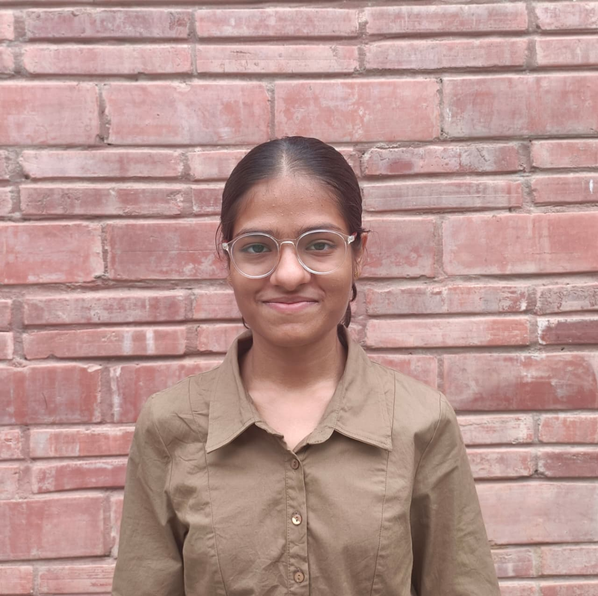

Volatility Lens: NSE Stock Market Analytics
Developed an interactive R Shiny dashboard analysing 16 NSE-listed stocks using GARCH-family models, volatility forecasting, and Value at Risk estimation.
STATISTICS • RESEARCH • DATA
I am an M.Sc. Statistics student at the Central University of Rajasthan, interested in statistical modelling, financial risk analysis, forecasting and applied research. I enjoy transforming complex datasets into meaningful insights and evidence-based solutions.
📍 India

GET TO KNOW ME
I am currently pursuing my M.Sc. in Statistics at the Central University of Rajasthan. My academic interests lie in statistical inference, econometrics, forecasting and applied data analysis. I enjoy exploring datasets, understanding patterns and applying statistical techniques to meaningful research questions.
WHAT I'VE WORKED ON
Applying statistical thinking to financial, agricultural and real-world data.
Developed an interactive R Shiny dashboard analysing 16 NSE-listed stocks using GARCH-family models, volatility forecasting, and Value at Risk estimation.
Analysed financial, climatic and market indicators to classify agricultural enterprises into risk categories and compare statistical and machine learning models.
Examined household-level agricultural tenancy patterns using National Sample Survey data, investigating concealed tenancy through statistical analysis and Probit modelling.
Built a web-based mathematical visualisation tool for exploring line and plane intersections through interactive visual outputs.
MY TOOLKIT
MY JOURNEY
Research on identifying real cultivators in India, including owner-operators and tenant farmers, using statistical and agricultural household data.
MY JOURNEY
Research, leadership and milestones that have shaped my journey.
26th International Conference, SSCA
Recognised for the poster presentation on climate variability and its relationship with agricultural crop yields.
Helped organise the first Datathon at Banasthali Vidyapith, with participation from 11 teams.
Led technical activities and contributed to the organisation's digital and operational initiatives.
LET'S CONNECT
Interested in research, data analytics or collaborative opportunities? Feel free to connect.